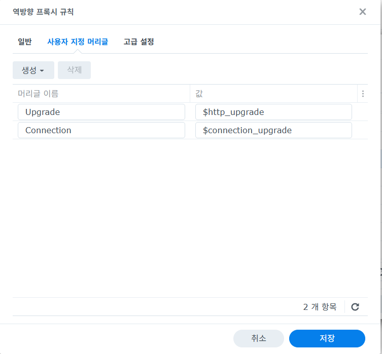
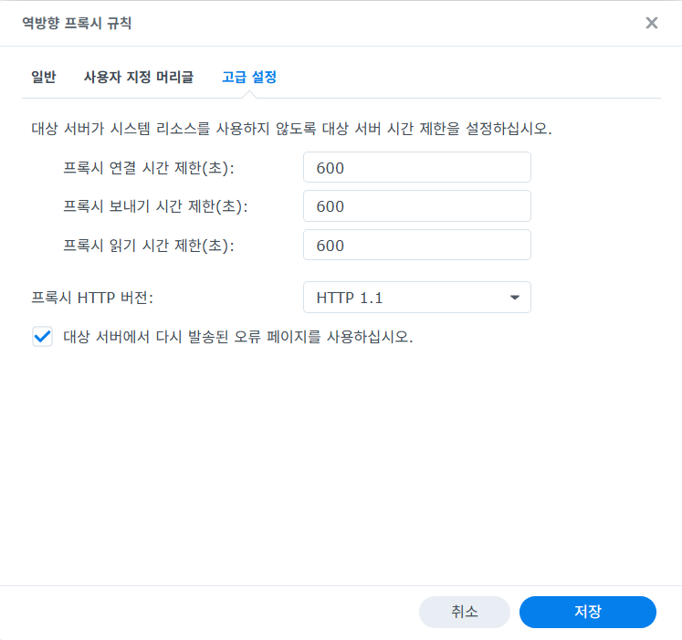

ttyd Installation
개요
이 문서는 Ubuntu와 Alpine Linux VM에서 ttyd를 설치해 웹 브라우저로
터미널에 접속하는 절차를 정리합니다.
대상 OS:
Ubuntu 22.04 LTS이상Alpine Linux 3.x
이 문서에서는 설치 자체에 집중하고, 외부 노출은 내부망 또는 리버스 프록시 뒤에서 운영하는 것을 전제로 합니다.
ttyd 선택 기준
ttyd는 단일 바이너리 기반의 경량 웹 터미널입니다.
운영 메모:
- 브라우저에서 SSH 대신 직접 셸을 노출할 수 있습니다.
- 기본 인증(
-c)과 TLS 옵션을 지원합니다. - 내부망에서 먼저 검증하고, 외부 공개 시에는 NAS 또는 프록시에서 인증과 TLS를 함께 거는 구성을 권장합니다.
사전 조건
- VM 생성 및 기본 네트워크 연결 완료
- 관리자 권한 계정 또는
root접속 가능 - 서비스로 띄울 셸 또는 명령 결정
- 예:
bash - 예:
sh - 예:
ssh user@localhost
기본 포트 예시:
7681/tcp
1. Ubuntu 설치
Ubuntu에서는 먼저 APT 패키지 설치를 시도합니다.
sudo apt update
sudo apt install -y ttyd
설치 확인:
ttyd -v
command -v ttyd
패키지가 보이지 않으면 아래 항목을 먼저 확인합니다.
universe저장소 활성화 여부- 사용 중인 Ubuntu 릴리스에서
ttyd패키지 제공 여부
apt install ttyd가 불가능한 환경이면 아래의
공식 바이너리 설치를 사용합니다.
2. Alpine Linux 설치
Alpine은 이 문서 기준으로 패키지 설치 대신 아래 공식 바이너리 설치 절차를 사용합니다.
운영 메모:
- Alpine에서는
/usr/local/bin/ttyd경로를 기준으로 이후 예시를 맞춥니다.
3. 공식 바이너리 설치
패키지 설치가 어려우면 ttyd 공식 릴리스 바이너리를 사용합니다.
이 방식은 Ubuntu와 Alpine 모두에서 공통으로 사용할 수 있습니다.
x86_64 예시
아래 버전은 2026-03-25 기준 최신 공식 릴리스(1.7.7)를 사용한
예시입니다.
VERSION="1.7.7"
sudo curl -L \
"https://github.com/tsl0922/ttyd/releases/download/${VERSION}/ttyd.x86_64" \
-o /usr/local/bin/ttyd
sudo chmod +x /usr/local/bin/ttyd
ttyd -v
주의:
- CPU 아키텍처에 맞는 바이너리를 내려받아야 합니다.
- 최신 버전과 다른 아키텍처 파일명은 공식 릴리스 페이지에서 확인합니다.
4. 즉시 실행
가장 단순한 검증은 아래와 같이 바로 띄워보는 방식입니다.
Ubuntu 예시:
ttyd -p 7681 -c admin:change-me bash
Alpine 예시:
ttyd -p 7681 -c admin:change-me sh
SSH 세션을 브라우저로 중계하고 싶으면 다음과 같이 사용할 수 있습니다.
ttyd -p 7681 -c admin:change-me ssh user@localhost
연결을 더 오래 유지하고 싶으면 다음처럼 ttyd websocket ping과 SSH keepalive를
함께 설정합니다.
ttyd -P 30 -p 7681 -c admin:change-me \
ssh \
-o StrictHostKeyChecking=no \
-o ServerAliveInterval=60 \
-o ServerAliveCountMax=10 \
semtl@localhost
ttyd 안에서 tmux를 함께 쓰고 싶지만 굳이 커스텀 소켓까지 나누고 싶지 않다면,
기본 소켓에서 세션 이름만 분리해도 됩니다.
예:
ttyd -P 30 -p 7681 -c admin:change-me \
ssh \
-o StrictHostKeyChecking=no \
-o ServerAliveInterval=60 \
-o ServerAliveCountMax=10 \
semtl@localhost \
'tmux new -A -s webmain'
접속 URL:
http://<vm-ip>:7681
주의:
admin:change-me는 예시이므로 실제 운영 비밀번호로 바꿉니다.- 외부 공개 전에는 방화벽, 접근 제어, 프록시 인증 정책을 함께 검토합니다.
5. Ubuntu systemd 서비스 등록
Ubuntu에서 상시 운영하려면 systemd 서비스 등록을 권장합니다.
서비스 파일:
[Unit]
Description=ttyd web terminal
After=network.target ssh.service
[Service]
Type=simple
User=semtl
ExecStart=/usr/bin/ttyd \
-W \
-P 30 \
-p 7681 \
-c admin:change-me \
-t fontSize=16 \
-t fontFamily=Consolas,Monaco,monospace \
-t lineHeight=1.2 \
-t letterSpacing=0.3 \
ssh \
-o StrictHostKeyChecking=no \
-o ServerAliveInterval=60 \
-o ServerAliveCountMax=10 \
semtl@localhost
Restart=always
RestartSec=3
[Install]
WantedBy=multi-user.target
패키지 설치 기준으로 아래 경로에 저장합니다.
sudo vi /etc/systemd/system/ttyd.service
적용:
sudo systemctl daemon-reload
sudo systemctl enable --now ttyd
sudo systemctl status ttyd
admin:change-me 부분만 실제 운영 비밀번호로 바꿉니다.
공식 바이너리를 /usr/local/bin/ttyd에 설치했다면 ExecStart 경로만 맞게
수정합니다.
6. Alpine OpenRC 자동 시작
Alpine에서는 /etc/init.d/ttyd 파일을 직접 만들어 openrc 서비스로
등록합니다.
/etc/init.d/ttyd 예시:
#!/sbin/openrc-run
name="ttyd"
description="ttyd web terminal service"
command="/usr/local/bin/ttyd"
command_args="-W -P 30 -p 7681 -c admin:change-me \
-t 'fontSize=16' \
-t 'fontFamily=Consolas,Monaco,monospace' \
-t 'lineHeight=1.2' \
-t 'letterSpacing=0.3' \
ssh -o StrictHostKeyChecking=no \
-o ServerAliveInterval=60 \
-o ServerAliveCountMax=10 \
semtl@localhost"
command_background="yes"
pidfile="/run/${RC_SVCNAME}.pid"
depend() {
need net
after firewall
}
파일 생성:
vi /etc/init.d/ttyd
chmod +x /etc/init.d/ttyd
적용:
rc-update add ttyd default
rc-service ttyd start
rc-service ttyd status
Alpine은 이 문서 기준으로 command="/usr/local/bin/ttyd"를 사용합니다.
admin:change-me 부분만 실제 운영 비밀번호로 바꿉니다.
7. 검증
VM 내부 확인:
ss -lntp | grep 7681
웹 확인:
- 브라우저에서
http://<vm-ip>:7681접속 - 인증 창이 나오고 셸이 표시되는지 확인
서비스 확인:
- Ubuntu:
systemctl status ttyd - Alpine:
rc-service ttyd status
8. 트러블슈팅
일정 시간 후 내부 SSH 인증 비밀번호를 다시 물어봄
이 문서에서 말하는 증상은 ttyd 자체 접속 비밀번호가 아니라,
ttyd 안에서 실행 중인 ssh semtl@localhost가 다시 Linux 사용자 비밀번호를
묻는 경우를 의미합니다.
현재 문서 예시처럼 아래 방식으로 실행하면:
ttyd -p 7681 -c admin:change-me ssh -o StrictHostKeyChecking=no semtl@localhost
운영 메모:
- 내부 SSH 세션이 끊기면 Linux 사용자 비밀번호를 다시 물을 수 있습니다.
- 즉, 이 증상은 보통
ttydBasic Auth가 아니라 내부 SSH 재인증입니다.
권장 실행 옵션
연결 유지 시간을 늘리려면 아래 옵션 조합을 권장합니다.
ttyd -P 30 -p 7681 -c admin:change-me \
ssh \
-o StrictHostKeyChecking=no \
-o ServerAliveInterval=60 \
-o ServerAliveCountMax=10 \
semtl@localhost
뜻:
-P 30:ttyd가 30초마다 websocket ping 전송ServerAliveInterval=60: SSH가 60초마다 keepalive 전송ServerAliveCountMax=10: 일시적인 응답 끊김을 더 오래 허용
확인 방법
쉘 idle timeout 확인:
echo $TMOUT
SSH 서버 설정 확인:
grep -nE 'ClientAlive|LoginGraceTime|PasswordAuthentication' /etc/ssh/sshd_config
해석 포인트:
echo $TMOUT가 비어 있으면 bash idle timeout이 없는 상태입니다.ClientAliveInterval 0이면 SSH 서버가 idle client를 주기적으로 끊도록 설정된 상태가 아닙니다.- 따라서 이 문서 기준 증상은
sshd_config타임아웃보다ttyd -> ssh localhost재접속 구조 때문일 가능성이 더 큽니다.
Last login ... from 127.0.0.1가 보이는 이유
ttyd가 아래처럼 실행 중이면:
ttyd -p 7681 -c admin:change-me ssh -o StrictHostKeyChecking=no semtl@localhost
브라우저에서 보는 셸은 실제로 localhost로 다시 SSH 접속한 세션입니다.
그래서 로그인 기록은 다음처럼 보일 수 있습니다.
Last login: ... from 127.0.0.1
이 의미는:
- 외부 PC가 직접 SSH로 붙은 것이 아니라
- 서버 내부에서
ssh semtl@localhost가 새로 시작되었다는 뜻입니다.
즉 비밀번호를 다시 묻는 시점은, 기존 내부 SSH 세션이 끊기고 새 localhost SSH 세션이 다시 만들어지는 상황으로 볼 수 있습니다.
권장 해결
- 가능하면
ssh비밀번호 대신 SSH key 로그인으로 전환 - 장시간 작업은
tmux로 유지 - Reverse Proxy 또는 브라우저 쪽 재인증 정책도 함께 확인
Synology Reverse Proxy 사용 시 권장값
직접 http://<vm-ip>:7681로 접근하면 문제가 없고, Synology Reverse Proxy를
거칠 때만 재로그인이 발생하면 프록시 쪽 websocket 처리도 함께 점검합니다.
사용자 지정 헤더:
Upgrade: $http_upgradeConnection: $connection_upgrade
예시 화면:

고급 설정 권장값:
프록시 연결 시간 제한(초):600프록시 보내기 시간 제한(초):600프록시 읽기 시간 제한(초):600프록시 HTTP 버전:HTTP 1.1
예시 화면:

운영 메모:
- 위 값은 Synology Reverse Proxy에서 websocket idle timeout 영향을 줄이는 데 도움이 됩니다.
- 그래도 재연결이 발생하면 브라우저 탭 절전 또는 내부 SSH 재접속 구조를 함께 의심해야 합니다.
tmux를 같이 쓸 때 소켓 선택
ttyd에서 tmux를 같이 쓸 때는 기본 소켓(default) 방식과 커스텀 소켓(web)
방식 중 하나를 선택할 수 있습니다.
기본 소켓 방식 예시:
ttyd -P 30 -p 7681 -c admin:change-me \
ssh \
-o StrictHostKeyChecking=no \
-o ServerAliveInterval=60 \
-o ServerAliveCountMax=10 \
semtl@localhost \
'tmux new -A -s webmain'
뜻:
tmux new -A -s webmain: 기본 소켓default에서webmain세션이 없으면 새로 만들고, 있으면 그 세션에 다시 붙습니다.
커스텀 소켓 방식 예시:
ttyd -P 30 -p 7681 -c admin:change-me \
ssh \
-o StrictHostKeyChecking=no \
-o ServerAliveInterval=60 \
-o ServerAliveCountMax=10 \
semtl@localhost \
'tmux -L web new -A -s main'
뜻:
tmux -L web new -A -s main:web라는 이름의 tmux 소켓에서main세션이 없으면 새로 만들고, 있으면 그 세션에 다시 붙습니다.
운영 메모:
- 문제가 없다면
default소켓이 더 단순하고 확인도 쉽습니다. tmux ls,tmux attach -t webmain,tmux kill-server같은 기본 명령을 그대로 쓸 수 있습니다.- 커스텀 소켓은
SSH와ttyd환경이 섞여서 제어문자 문제가 날 때만 추가로 고려하면 됩니다.
SSH key 기반으로 전환
ttyd가 내부 ssh semtl@localhost를 비밀번호 없이 실행할 수 있도록 같은 계정에
SSH key를 등록하면 재로그인 부담을 줄일 수 있습니다.
키 생성:
ssh-keygen -t ed25519 -f ~/.ssh/id_ed25519 -N ""
자기 자신에게 공개키 등록:
cat ~/.ssh/id_ed25519.pub >> ~/.ssh/authorized_keys
chmod 700 ~/.ssh
chmod 600 ~/.ssh/authorized_keys
동작 확인:
ssh -o StrictHostKeyChecking=no semtl@localhost
기대 결과:
- 비밀번호 없이 localhost SSH 접속 성공
이후 ttyd는 같은 명령을 유지해도 내부 SSH 비밀번호 재입력 부담이 크게 줄어듭니다.
운영 팁
ttyd 안에서 장시간 작업을 직접 유지하기보다,
내부에서는 tmux 세션을 사용하고 ttyd는 그 세션에 접근하는 용도로 쓰는 편이
안정적입니다.
9. 운영 권장사항
ttyd를 인터넷에 직접 노출하지 않고 리버스 프록시 뒤에 둡니다.- 프록시에서 HTTPS 인증서를 종료하고,
ttyd는 내부 HTTP로만 운용하는 구성을 권장합니다. - 공용 계정보다 운영자별 SSH 계정과 프록시 인증을 조합하는 방식이 더 안전합니다.
- 장기 운영 시에는 VM 방화벽 또는 상위 방화벽에서
7681/tcp접근 대상을 제한합니다.